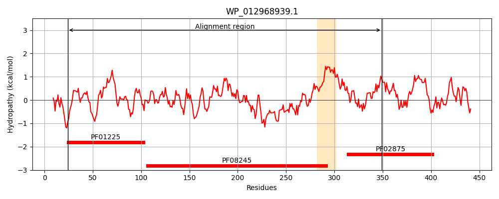
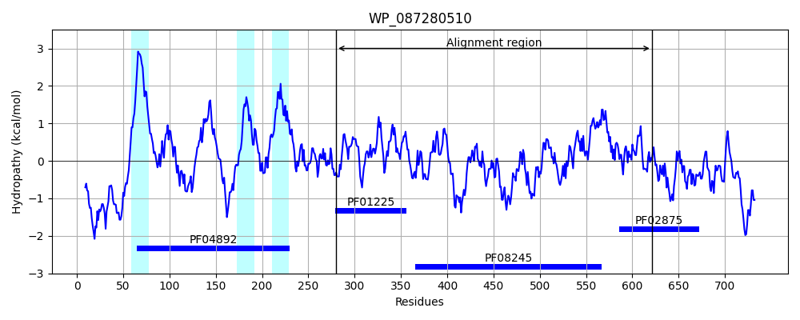

Hit Accession: WP_087280510
Hit TCID: 2.A.128.2.3
Hit Description: gnl|BL_ORD_ID|21541 gnl|TC-DB|WP_087280510.1|2.A.128.2.3 UDP-N-acetylmuramoyl-L-alanyl-D-glutamate--2,6-diaminopimelate ligase [Eubacterium sp. An3]
Mach Len: 352
e:0.000000
Query TMS Count : 1
Hit TMS Count: 3
TMS-Overlap Score: 0.000000
Predicted Substrates:None
BLAST Alignment:
Score: 225 , Bit scores: 91 bits, E-value: 1.3e-19, Alignment length: 352, Percentage identity: 27
Query: 24 IDEVTSDTRKVTAGCLFVALKGERFDAHDFAEQAKAAGAGALLVSRPLACDLPQVI----VKDTRQAFGEL-AAWVRQQV-PTRVVALTGSSGKTSVKEMTAAILSQCGNTLYTAGNLNNDIGVPMTLLRLTKEHQYAV--------------IELGANHQGEIAWTVSLTRPEAALVNNLAAAHL--EGFGSLAGVAKAKGEIYTGLPENGIAILNADNNDWLNWQAVIGDRKVWRFSPNAANSDFTATNVQITSH----GTEFTLQTPTGNVDVLLPLPGRHNIANALAATSLAMAVGADLAAVKAGLAQLKAVPGRLFPIRLTESQLLLDDSYNANVGSMTAAVQVLSE 349
+ V +D+RK+ GC+F+ +KG FD H FAE+A GA LLV P+ D+P+ + V+ TR A + AAW +A+TG+ GKT+ M A+L + G+ G + IG + T Y + + + A+ QG + + L NL+ H+ A K ++T + G A L+ ++ + + +AV V F A +D A N+ +T G +F + + N V +PG N+ NAL A +A+ +GADL+ + L V GR+ I L+ D Y N ++ + ++ L E
Sbjct: 280 VSAVVNDSRKLAEGCMFICIKGASFDGHTFAEEAAKKGAAVLLVEDPV--DVPETVTVIQVESTRYAMALVSAAWFGHPAKELTTIAVTGTKGKTTTTYMIQALLEKAGHKTGVIGTIEVVIGDKHIAVNNTTPESYDIHRYFREMVDAGCDAVVMEASSQGFKLDRTAGIEFDYGLFTNLSPDHIGPNEHKDFAEYLSCKAMLFTQC-KKGFANLDDEHFEEITAKAVC---PVQTFG-LAEGADLRAQNITLTRDTDFLGVDFDV-SGLLNGRVSCGVPGTFNVHNALGAICVALEMGADLSMINEVLKTF-TVKGRVQIIPTGYDYTLIVD-YAHNAVALESILKTLRE 621 | Protein Hydropathy Plots: |
|---|
|  |  |
Pairwise Alignment-Hydropathy Plot:
|
|---|
 |